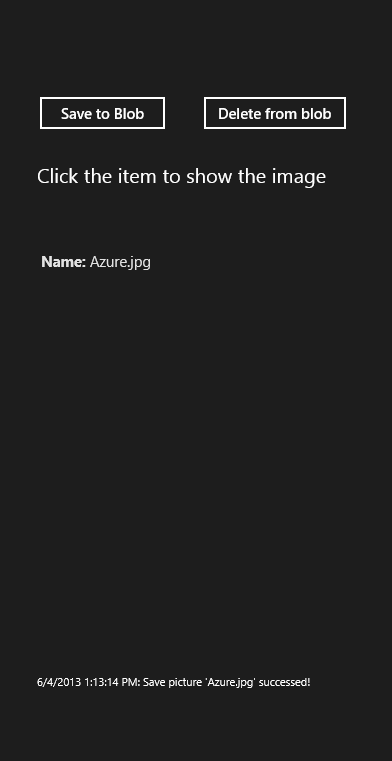

How to manage Azure BLOB storage content in Windows Store apps
How to manage Azure BLOB storage content in Windows Store apps
Introduction
Windows Azure storage class library now supports windows store app.
This sample will show you how to operate Azure blob storage in your store app, including upload/download/delete file from blob storage.
Building the Sample
You need to download the windows azure storage sdk for win-8 at first, then add reference to windowsAzure.storage.winmd file.
Running the Sample
1. Change the account to your own in app.xaml.cs file.
2. Press Ctrl+F5 to run the app.
3. Click "save to blob" button, choose a picture in your picture library and click"OK".

4. You will see the list as below:

5. Click an item, then you can see the picture show up on the screen.

6. Right click an item, and click "Delete from blob" button.
7. The selected item will be deleted.
Using the Code
1. Create a blank Windows Store app named: "CSAzureBlobClassLiabaryWithWin8App".
2. Add reference to Microsft.WidnowsAzure.Storage.winmd.
3. Add the code below to app.xaml.cs file.
This code specific a container for your programe.
4. For more details please refer to MainPage.xaml.cs.
More Information